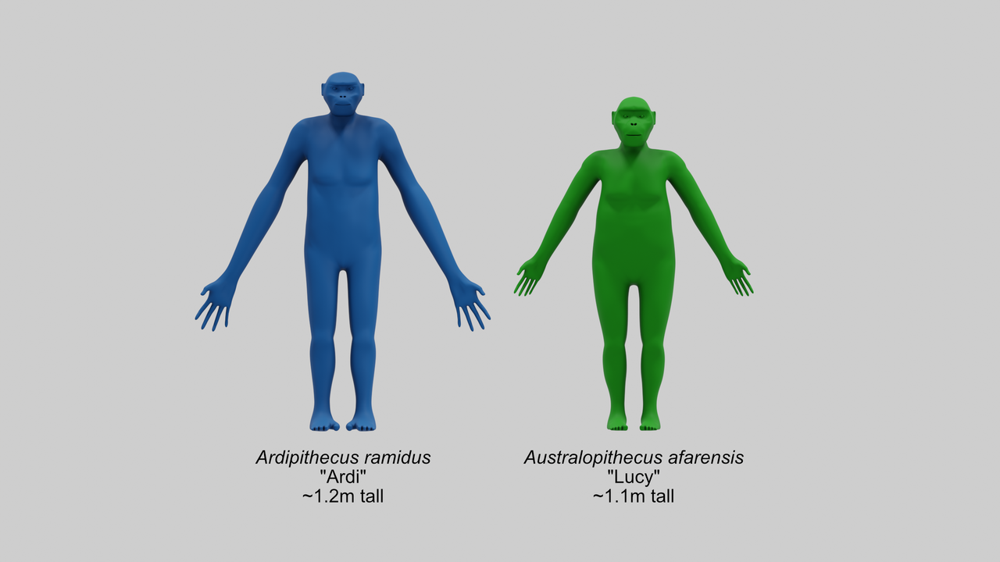
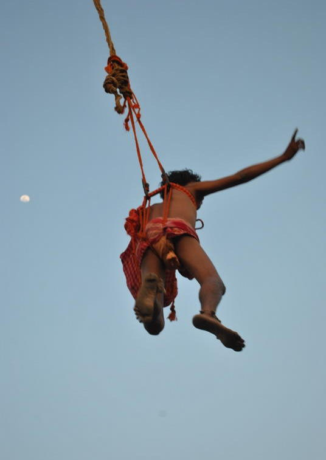

What Is Anthropology?
Anthropology is the study of humankind — all of it, everywhere, across all of time. It asks a single stubborn question in a thousand forms: what does it mean to be human? To answer it, anthropologists dig up ancient hearths, measure fossil skulls, map the grammar of unwritten languages, and live for years inside communities not their own, learning to see the world as insiders do. This chapter introduces the discipline's distinctive habits of mind — its holism, its comparative reach, its insistence on firsthand fieldwork — and the master concept that ties the whole enterprise together: culture. Everything that follows in this book grows out of these first ideas.
By the end of this chapter you can
- Define anthropology and explain its holistic and comparative perspective.
- Name and distinguish the discipline's four fields and say what each studies.
- Explain how anthropologists define culture and list its key features.
- Contrast the emic (insider) and etic (outsider) points of view.
- Explain cultural relativism and distinguish it from ethnocentrism.
- Describe fieldwork and participant observation as the method that defines the discipline.
- Trace the shift from armchair anthropology to modern fieldwork through Boas, Malinowski, and Mead.
- Distinguish linguistic determinism from linguistic relativity in the Sapir–Whorf question.
- Explain why anthropologists treat race as a social construction rather than a biological fact.
- Use core comparative categories — subsistence strategies, band / tribe / chiefdom / state, reciprocity / redistribution / market, descent and marriage systems, shaman and priest, and rites of passage.
Section 1The study of humankind

A very large question
Every discipline stakes out a corner of reality. Economists take the market, historians take the documented past, biologists take the living cell. Anthropology — from the Greek anthropos (human being) and logos (study) — takes something far larger and more slippery: the entire human species, in every place it has ever lived and every era it has ever occupied. That is an impossibly broad brief, and anthropologists know it. What makes the field coherent is not a narrow subject but a distinctive way of looking, a set of intellectual habits that anthropologists carry into any topic they touch.
The holistic perspective
The first habit is holism — the conviction that no piece of human life can be understood in isolation from the rest. A wedding is never only a ceremony; it is also an economic transaction, a religious act, a political alliance, a statement about gender, and an expression of a people's deepest values, all at once. When the anthropologist E. E. Evans-Pritchard studied the Nuer of South Sudan in the 1930s, he could not explain their politics, their religion, or their poetry without first understanding their cattle, because cattle sat at the center of Nuer economics, kinship, ritual, and identity simultaneously. Holism also runs vertically, through time and biology: to grasp a human community fully you may need its ecology, its evolutionary past, its language, and its history braided together. This is what anthropologists mean when they call their approach biocultural — humans are at once biological organisms and cultural creatures, and neither half explains us alone.
The comparative perspective
The second habit is comparison. Anthropology is relentlessly cross-cultural: it refuses to treat any one society — least of all the anthropologist's own — as the natural or default way of being human. By setting practices side by side across the whole human record, the field turns the familiar strange and the strange familiar. Marriage payments flow from the groom's family in one society and the bride's in another; some peoples reckon descent through mothers, others through fathers; a gesture that means "yes" in one place means "no" a border away. Only by comparing can we separate what is genuinely universal about human beings from what is merely local custom mistaken for human nature. Comparison is anthropology's laboratory, and the diversity of the world's cultures is its evidence.
| Hallmark | What it means | Why it matters |
|---|---|---|
| Holism | Study the whole — economy, kinship, religion, biology, history — together | Human practices interlock; pulling one thread moves the rest |
| Comparison | Set societies side by side across space and time | Separates true universals from local custom |
| Fieldwork | Learn firsthand by living among the people studied | Grounds claims in lived reality, not armchair guesswork |
| Relativism | Understand a practice on its own cultural terms first | Guards against judging others by one's own yardstick |
The comparative toolkit
Comparison needs categories. Over a century of fieldwork, anthropologists have built a shared vocabulary for sorting the world's societies — not to rank them, but to make them commensurable enough to think about side by side. A handful of these categories do most of the work, and the rest of this book unfolds them.
Making a living. Societies differ first in subsistence strategy, the way they get food. Foraging — hunting, fishing, and gathering wild foods — supported every human community until roughly twelve thousand years ago and still shapes the lives of peoples such as the Ju/'hoansi of the Kalahari and the Hadza of Tanzania. Horticulture cultivates gardens with hand tools, often clearing a plot and later letting it rest; the yam gardens of the Trobriand Islands are the classic case. Pastoralism builds life around herds of domesticated animals, as with Nuer and Maasai cattle or Mongolian horses and sheep. Intensive agriculture adds plows, irrigation, terracing, and draft animals to work the same land permanently, feeding the dense populations that make cities possible. Industrial and post-industrial economies run on mechanized production, wage labor, and markets. These are strategies, not stages: no society is obliged to pass through them in order, and foragers today are our contemporaries, not living fossils or relics of an earlier age.
Organizing power and goods. A widely used typology associated with Elman Service sorts political organization into band, tribe, chiefdom, and state. A band is a small, mobile, kin-based group, typically of foragers, with informal and situational leadership and no formal office. A tribe is larger and usually food-producing, knit together by kinship, age grades, or other associations, and led by figures — village heads, “big men” — who have influence but no power to command. A chiefdom has a permanent, usually hereditary office of chief and ranks descent lines by their closeness to it. A state is centralized and socially stratified, with a bureaucracy, formal law, taxation, and a claimed monopoly on the legitimate use of force. The typology is a rough sorting device rather than a staircase; used carelessly it slides back toward the discredited ladder-of-progress thinking that Section 5 describes. Goods, meanwhile, move by three broad routes, a scheme owed to the economic historian Karl Polanyi: reciprocity (direct give-and-take between parties, which Marshall Sahlins graded from open-handed giving among close kin to hard bargaining with strangers), redistribution (goods flow inward to a center — a chief, a temple, a treasury — and back out again), and market exchange (goods traded at prices set by supply and demand, usually through money). Most societies use all three; what differs is which one dominates.
Reckoning kin, and marrying. Every society traces descent, but not in the same way. Unilineal systems follow a single line: patrilineal descent runs through fathers, as among the Nuer, and matrilineal descent through mothers, as among the Trobrianders and the Hopi. Matrilineal is not the same as matriarchal — tracing descent through women says nothing on its own about who holds authority, which in many matrilineal societies rests substantially with a woman's brother. Bilateral reckoning counts both sides more or less equally, the common pattern across Europe and North America. Marriage varies just as widely. Monogamy (one spouse at a time) sits alongside polygamy, whose two forms are polygyny (a man with more than one wife, by far the more common of the two) and the much rarer polyandry (a woman with more than one husband, documented most often as fraternal polyandry in Tibet and Nepal). Rules of exogamy require marrying outside a defined group; rules of endogamy require marrying inside one. Some form of incest taboo appears in every known society, though which relatives it covers changes dramatically from place to place. Marriage also moves wealth: bridewealth passes from the groom's kin to the bride's, as in Nuer cattle transfers, while a dowry travels with the bride.
Ritual and religious specialists. Anthropologists distinguish two ideal types of religious practitioner. A shaman is characteristically a part-time specialist called to the role by personal experience — a vision, an illness, a dream — who works on behalf of individual clients and often enters a trance to deal with the spirit world; the word itself comes from the Evenki of Siberia. A priest is characteristically a full-time specialist, formally trained and installed in an office within an organized institution, who performs prescribed rites on behalf of a whole congregation. The sharpest contrast is the source of authority: a priest's comes from the office, a shaman's from personal power and direct experience. Shamanic practice is most common in foraging and horticultural societies and priesthoods in societies with states and formal hierarchies, but the two are ideal types, not a partition — many societies have both. Ritual itself has a recurring shape as well, the three-stage rite of passage that Section 5 takes up.
| Comparative category | The range it covers | An example |
|---|---|---|
| Subsistence strategy | Foraging, horticulture, pastoralism, intensive agriculture, industrialism | Ju/'hoansi foraging; Maasai herding |
| Political organization | Band, tribe, chiefdom, state | A mobile forager band; a bureaucratic state |
| Exchange | Reciprocity, redistribution, market | Kula reciprocity; taxation as redistribution |
| Descent | Patrilineal, matrilineal, bilateral | Nuer patrilineal; Trobriand matrilineal |
| Marriage | Monogamy, polygyny, polyandry; exogamy, endogamy | Fraternal polyandry in Tibet and Nepal |
| Religious specialist | Shaman (part-time, called) vs priest (full-time, ordained) | A Siberian shaman; a temple priesthood |
- Anthropology is the study of humankind across all places and all of time.
- Holism studies human life as an interconnected whole — biological and cultural together.
- The comparative, cross-cultural method sorts human universals from local custom.
- What unites the field is a shared perspective, not a single narrow subject.
- Comparison runs on shared categories: subsistence strategies (foraging, horticulture, pastoralism, intensive agriculture, industrialism), band / tribe / chiefdom / state, reciprocity / redistribution / market, descent and marriage systems, and shaman versus priest.
- These categories are sorting tools, not a ladder of progress — foragers are contemporaries, not survivals.
Section 2The four fields

One discipline, four lenses
In North America, anthropology is traditionally organized into a four-field approach, a structure championed by Franz Boas a century ago precisely so that no single lens would be allowed to answer the human question alone. The four fields are cultural anthropology, archaeology, biological (physical) anthropology, and linguistic anthropology. Together they cover human beings as living societies, as a deep material past, as an evolving biological species, and as speaking animals whose languages shape thought.
What each field does
Cultural anthropology (also called sociocultural anthropology) studies living human societies — their beliefs, institutions, kinship, politics, and daily practice — chiefly through long-term fieldwork. Its central product is the ethnography, a book-length written account of one people's way of life. Archaeology reconstructs past human cultures from what they left behind: tools, hearths, garbage, buildings, and bones. It is anthropology's time machine, the only field that can reach societies with no living members and no written records. Biological anthropology studies humans as biological organisms — human evolution and the fossil record, primatology, human genetics and variation, and forensic identification. It is the field that reads a 3.2-million-year-old skeleton like “Lucy” for clues to how we came to walk upright. Linguistic anthropology studies language as a human and cultural phenomenon: how languages are structured, how they change, and how the way people talk both reflects and shapes their social world — an idea associated with the Sapir–Whorf hypothesis of linguistic relativity.
Language and thought: the Sapir–Whorf question
Linguistic anthropology's most argued-over idea runs from Boas to his student Edward Sapir and Sapir's student Benjamin Lee Whorf. The two never published it jointly as a formal proposition — later scholars gathered their scattered claims under the name Sapir–Whorf hypothesis — and it is essential to separate its two versions. The strong version, linguistic determinism, holds that language determines thought: what your language cannot express, you cannot think. Almost no one accepts it, because people plainly think thoughts their language has no single word for, and readily borrow or coin words when they need them. The weak version, linguistic relativity, holds that the habitual patterns of a language nudge the habitual patterns of its speakers' attention and thought. This version has real evidence behind it. Speakers of languages such as Guugu Yimithirr in northern Australia, which locates things by compass direction rather than by “left” and “right,” keep a remarkable running sense of orientation; grammatical gender colors how speakers describe objects; and where a language draws its color boundaries measurably affects how quickly speakers tell two neighboring shades apart.
Two cautionary tales come with the topic. The claim that “Eskimo” languages have dozens or hundreds of words for snow is a much-repeated exaggeration, inflated through retelling from a modest original observation; Inuit and Yupik languages build long words by stacking suffixes onto roots, which makes counting “words” the wrong exercise entirely. And Whorf's assertion that Hopi has no grammar of time was later shown to be mistaken — Hopi has a rich vocabulary and grammar for temporal relations. Linguistic anthropologists today mostly pursue something more modest and better documented: how ways of speaking mark identity, status, gender, and power. Which language a family keeps at home, who may interrupt whom, what counts as a polite request — these turn out to be where language and social life visibly grip each other.
The fifth field and applied work
Many programs add applied anthropology as a fifth field — the use of anthropological knowledge to solve practical problems in health, development, business, forensics, and public policy. Applied work is less a separate subject than a stance that cuts across all four fields: it asks not only what humans are, but how understanding them can be put to use.
| Field | What it studies | Signature method | Example question |
|---|---|---|---|
| Cultural anthropology | Living societies — belief, kinship, politics, ritual | Long-term fieldwork; ethnography | How do the Trobrianders organize exchange? |
| Archaeology | Past cultures via material remains | Excavation; artifact & dating analysis | Why did people first settle in villages? |
| Biological anthropology | Humans as an evolving biological species | Fossils, primatology, genetics, osteology | When and why did bipedalism evolve? |
| Linguistic anthropology | Language in social and cultural life | Recording, grammar, discourse analysis | Does the language you speak shape thought? |
| Applied anthropology | Anthropology put to practical use | Any of the above, aimed at a problem | How can a clinic fit local health beliefs? |
- The four-field approach: cultural, archaeological, biological, and linguistic anthropology.
- Cultural studies living societies (ethnography); archaeology reads the material past; biological studies humans as an evolving species; linguistic studies language in social life.
- Applied anthropology is a fifth, cross-cutting field that puts the knowledge to use.
- Boas built the four-field structure to keep the human question whole.
- The Sapir–Whorf question has two versions: linguistic determinism (language determines thought — rejected) and linguistic relativity (language influences habitual thought — supported).
Section 3The culture concept

Anthropology's master concept
If anthropology has one great idea, it is culture. The classic definition comes from the Victorian anthropologist Edward Burnett Tylor, who in 1871 called culture “that complex whole which includes knowledge, belief, art, morals, law, custom, and any other capabilities and habits acquired by man as a member of society.” Notice the key word: acquired. Culture is not carried in the genes and not invented afresh by each person; it is learned from others and handed down. This is why an infant raised in Tokyo grows up speaking Japanese and bowing in greeting while a genetically similar infant raised in Lagos grows up speaking Yoruba with an entirely different set of manners. The capacity for culture is biological and universal; its content is learned and local.
The features of culture
Anthropologists find it useful to break the concept into a handful of features. Culture is learned (through enculturation, the lifelong process of absorbing one's culture). It is shared — held in common by a group, which is what lets its members cooperate and understand one another. It is symbolic: it works through symbols, things that stand for other things by agreement rather than by nature, of which language is the supreme example. It is integrated — its parts hang together as a system, so that a change in the economy ripples into family life and religion. And it is often adaptive (and sometimes maladaptive), a toolkit for making a living in a particular environment. Above all, culture is not the same as human biology and not the same as an individual's idiosyncrasies; it is the shared, learned design for living that a group passes on.
Symbols and shared meaning
The interpretive anthropologist Clifford Geertz pushed the symbolic side hardest, defining culture as the “webs of significance” humans themselves have spun — the shared meanings through which people make sense of their lives. In his famous essay on the Balinese cockfight, Geertz argued that the fight was not really about birds or even gambling; it was a story the Balinese told themselves about themselves, a dramatization of status, rivalry, and masculinity. To describe it adequately you had to interpret its meaning, not just record its motions — the practice he called thick description.
Culture, not race
The insistence that culture is learned rather than inherited carried a consequence that reshaped the twentieth century. If what separates peoples is learned, then it is not written in the body — and the nineteenth-century conviction that humanity divides into a few fixed biological races, ranked by ability, loses its foundation. Franz Boas attacked that conviction with data. Measuring thousands of immigrants and their American-born children in the years around 1910, he found that head shape — then treated as the very signature of a fixed racial type — shifted measurably in the children, which no fixed type should do. What scholars had been reading as race, he argued, was largely the imprint of environment and history.
Modern biology has confirmed and extended the point. Human physical variation is entirely real, but it is clinal: traits shade gradually across geography instead of clustering into bounded groups, and they vary independently of one another, so that skin pigmentation, blood type, and lactose tolerance each map onto the world differently and refuse to bundle into “races.” Most human genetic variation is found within any conventionally named population rather than between populations. And the categories themselves shift across borders: the way one society sorts people by color does not match the way its neighbor does, which is exactly what one expects of a cultural classification and not of a natural kind. Anthropologists therefore describe race as a social construction — a set of categories a society invents, teaches, and enforces. That is emphatically not the same as calling it unimportant. Race is not a biological fact, but racism is a social fact with measurable consequences in housing, health, wealth, and life expectancy. A thing can be invented and still be one of the most powerful forces in a person's life, and tracing exactly that difference is one of the discipline's steadiest commitments.
| Feature | Meaning | Everyday illustration |
|---|---|---|
| Learned | Acquired through enculturation, not inherited biologically | Children learn the language and manners around them |
| Shared | Held in common by a group | A red light means “stop” to everyone at the intersection |
| Symbolic | Works through symbols — meaning by agreement | Words, flags, wedding rings, gestures |
| Integrated | Parts form an interlocking system | A shift to wage work reshapes family and religion |
| Adaptive | A toolkit for living in an environment | Inuit clothing and hunting knowledge for the Arctic |
- Tylor's 1871 definition frames culture as the “complex whole” that is acquired — learned, not inherited.
- Culture is learned, shared, symbolic, integrated, and often adaptive.
- Enculturation is how each generation absorbs its culture; symbols (especially language) carry it.
- Geertz defined culture as shared webs of meaning, read through thick description.
- Race is a social construction, not a biological division: human variation is clinal and traits vary independently, and Boas showed even “fixed” racial traits respond to environment. Racism, however, has real and measurable effects.
Section 4Emic and etic

Two points of view
To study another way of life is to stand in two places at once. The linguist Kenneth Pike coined the pair of terms anthropologists now use for this, borrowing them from phonemic and phonetic. The emic perspective is the insider's view: the categories, meanings, and explanations that the people themselves use and recognize. The etic perspective is the outsider's, analytic view: the concepts an observer brings to describe and compare across cultures, whether or not the locals would phrase things that way. A good ethnographer needs both — the emic to grasp what a practice means to those who live it, the etic to set that practice in a framework that can be compared with practices elsewhere.
Ethnocentrism and its cure
The natural human tendency is ethnocentrism — judging other cultures by the standards of one's own and finding them wanting. Ethnocentrism is comfortable and nearly universal, and it is also the great obstacle to understanding, because it hears “different” and translates it as “wrong.” Anthropology's discipline against it is cultural relativism: the methodological principle, developed by Franz Boas and his students, that a practice must first be understood on its own terms, within the logic of the culture that holds it, before it can be judged. What looks bizarre from outside — a food taboo, a mourning custom, an initiation ordeal — almost always makes sense once you understand the web of meaning it sits inside. A classic teaching device is Horace Miner's tongue-in-cheek essay on the “Nacirema” (“American” spelled backward), which describes ordinary American bathroom hygiene in the solemn language of exotic ritual — a reminder that every culture looks strange when viewed coldly from outside.
The limits of relativism
Cultural relativism is a tool for understanding, not a moral surrender. Taken to an extreme, it would forbid all cross-cultural judgment, which few anthropologists accept — most distinguish between relativism as a method (suspend judgment long enough to understand) and relativism as an ethics (anything goes). The working compromise is to insist on understanding first and to reserve evaluation for afterward, made carefully and with humility. Cultural relativism is the opposite of ethnocentrism, not the opposite of ethics.
| Emic / relativist | Etic / outsider | |
|---|---|---|
| Point of view | The insider's own categories and meanings | The analyst's comparative concepts |
| Guiding question | What does this mean to the people who do it? | How does this compare across cultures? |
| Danger to avoid | Going “native” — losing analytic distance | Ethnocentrism — judging by one's own yardstick |
| Discipline it needs | Empathy and immersion | Cultural relativism — understand before judging |
- Emic = the insider's view; etic = the outsider's analytic view; good ethnography uses both.
- Ethnocentrism judges others by one's own standards; cultural relativism understands them on their own.
- Cultural relativism (from Boas) is a method for understanding, not a licence to abandon ethics.
- Miner's Nacirema shows that any culture, including one's own, looks strange viewed from outside.
Section 5A short history

The armchair era
Anthropology began, in the nineteenth century, as a science conducted from a distance. Early theorists such as Edward Tylor, Lewis Henry Morgan, and Sir James Frazer — author of the vast comparative study of myth and religion, The Golden Bough (1890) — built sweeping theories of human progress out of reports mailed home by missionaries, traders, and colonial officers. They rarely met the peoples they wrote about. This is the age of armchair anthropology, and its favorite framework was unilineal evolution — the now-discredited idea that all societies climb the same ladder from “savagery” through “barbarism” to “civilization,” with the theorist's own nation conveniently at the top. The scheme was ethnocentric to its core, and its downfall would define the modern discipline.
Boas and the fieldwork revolution
Franz Boas (1858–1942), often called the father of American anthropology, demolished the armchair. Trained in physics, he insisted that culture had to be studied firsthand and in its own historical context — a stance called historical particularism — rather than slotted into a universal ladder. From his long engagement with the Kwakwaka'wakw (Kwakiutl) of the Pacific Northwest and their potlatch feasts, he argued that each culture is the product of its own particular history and must be judged on its own terms. Boas gave anthropology four enduring gifts: the four-field approach, cultural relativism, a sustained scientific assault on the racial thinking of his day, and the training of a generation of students who would carry all three across the discipline. In Britain, at almost the same moment, Bronislaw Malinowski (1884–1942) turned firsthand study into a rigorous method. An Austro-Hungarian subject caught in British-administered territory when the First World War broke out, he was permitted to sit out the war doing research and spent it in the Trobriand Islands, living among the islanders for years, learned their language, and pioneered participant observation — taking part in daily life while systematically recording it. His account of the kula ring — a vast circuit of ceremonial exchange in which shell armbands travel between island partners in one direction around the ring and shell necklaces travel in the other, building lifelong obligations rather than profit — appeared in Argonauts of the Western Pacific (1922) and became the template for modern ethnography.
Mead, and anthropology's public voice
Boas's most famous student, Margaret Mead (1901–1978), carried the new fieldwork method — and its relativist message — to a mass audience. In Coming of Age in Samoa (1928), she argued that the storm and stress of adolescence was not a biological inevitability but varied with culture, a direct challenge to the assumption that Western patterns were universal human nature. Whatever later debates her Samoan work provoked, Mead established anthropology as a public conscience, using the comparative study of other societies to question the settled certainties of her own. Around the same period, students of ritual gave the field lasting tools: Arnold van Gennep, in The Rites of Passage (1909), showed that ceremonies marking life's transitions share a three-part structure — separation, liminality (a betwixt-and-between threshold), and reincorporation — and Victor Turner later deepened the middle phase, showing how the liminal stage dissolves ordinary status and forges an intense fellowship he called communitas.
| Figure | Era | Contribution |
|---|---|---|
| Tylor, Morgan, Frazer | 19th c. | Armchair theory; culture concept; unilineal evolution (later rejected) |
| Franz Boas | c. 1900–1940 | Historical particularism, cultural relativism, the four-field approach |
| Bronislaw Malinowski | 1915–1920s | Participant observation; the Trobriand kula; functionalism |
| Arnold van Gennep | 1909 | The three-stage structure of rites of passage |
| Margaret Mead | 1920s onward | Culture-and-personality; anthropology's public voice |
| Victor Turner | mid-20th c. | Liminality and communitas in ritual |
- Armchair anthropology (Tylor, Morgan, Frazer) theorized human progress from secondhand reports and favored discredited unilineal evolution.
- Boas established firsthand study, historical particularism, cultural relativism, and the four-field approach.
- Malinowski pioneered participant observation among the Trobrianders, documenting the kula in Argonauts of the Western Pacific.
- Mead gave anthropology a public voice; van Gennep and Turner mapped the structure of rites of passage and liminality.
The chapter in one breath
- Anthropology is the study of humankind everywhere and across all time, held together by a shared perspective rather than a narrow subject.
- That perspective is holistic (study the whole, biological and cultural together) and comparative (cross-cultural), which separates human universals from local custom.
- The four fields — cultural, archaeological, biological, and linguistic anthropology (plus applied) — study humans as societies, a material past, an evolving species, and speaking animals.
- Culture, the field's master concept, is the learned, shared, symbolic, integrated, and adaptive design for living; Tylor defined it and Geertz read it as webs of meaning.
- The emic (insider) and etic (outsider) views are both needed; cultural relativism is the cure for ethnocentrism, a method for understanding rather than a moral verdict.
- Anthropology moved from armchair theorizing (Frazer, Tylor, Morgan) to firsthand fieldwork through Boas, Malinowski, and Mead.
- On language and thought, linguistic determinism (the strong Sapir–Whorf claim) is rejected, while linguistic relativity — language influences habitual thought — is supported.
- Race is a social construction rather than a biological division: human variation is clinal and its traits vary independently. Racism nonetheless has real, measurable consequences.
- Its comparative toolkit includes subsistence strategies (foraging, horticulture, pastoralism, intensive agriculture, industrialism), band / tribe / chiefdom / state, forms of exchange (reciprocity / redistribution / market), descent (patrilineal, matrilineal, bilateral) and marriage (monogamy, polygyny, polyandry; exogamy, endogamy), the contrast between shaman and priest, and the three-stage rite of passage.
ReferenceWords worth knowing
A quick reference for the terms in this chapter — skim it now, or circle back whenever a word trips you up.
- Agriculture (intensive)
- A subsistence strategy that farms permanent fields using plows, irrigation, terracing, or draft animals, supporting dense populations and cities.
- Applied anthropology
- The use of anthropological knowledge and methods to address practical problems in health, development, business, forensics, and policy; often counted as a fifth field.
- Archaeology
- The field that reconstructs past human cultures from their material remains — tools, structures, refuse, and bones.
- Band
- The smallest and most egalitarian form of political organization: a small, kin-based, mobile group typical of foragers, with informal and situational leadership.
- Bilateral descent
- Reckoning kinship through both the mother's and the father's lines more or less equally.
- Biological (physical) anthropology
- The field that studies humans as an evolving biological species — human evolution, primatology, genetics, variation, and osteology.
- Bridewealth
- Wealth transferred from the groom's kin to the bride's kin at marriage, as in Nuer cattle transfers; contrast dowry, which travels with the bride.
- Chiefdom
- A political form with a permanent, usually hereditary office of chief and descent lines ranked by closeness to that office; goods commonly move by redistribution.
- Clinal variation
- The gradual shading of a physical trait across geography rather than its clustering into bounded groups; a central reason race fails as a biological division.
- Comparative (cross-cultural) method
- Anthropology's practice of setting societies side by side across space and time to distinguish universals from local custom.
- Cultural anthropology
- The field that studies living human societies — belief, kinship, politics, and practice — chiefly through fieldwork and ethnography.
- Cultural relativism
- The principle that a practice should first be understood on its own cultural terms before being judged; the methodological opposite of ethnocentrism.
- Culture
- The learned, shared, symbolic, integrated, and largely adaptive design for living that a group transmits across generations.
- Descent
- The culturally recognized reckoning of ancestry that assigns people to kin groups; may be unilineal (patrilineal or matrilineal) or bilateral.
- Emic
- The insider's perspective — the categories and meanings the people themselves use and recognize.
- Enculturation
- The lifelong process by which a person absorbs the culture of the group they grow up in.
- Endogamy
- A rule requiring marriage within a defined social group; the counterpart of exogamy.
- Ethnocentrism
- Judging another culture by the standards of one's own and finding it inferior.
- Ethnography
- The firsthand, in-depth written account of a particular people's way of life; also the fieldwork that produces it.
- Ethnology
- The comparative analysis of ethnographic data across many societies to reach broader conclusions about culture.
- Etic
- The outsider's analytic perspective — the concepts an observer brings for description and cross-cultural comparison.
- Exogamy
- A rule requiring marriage outside a defined social group; the counterpart of endogamy.
- Fieldwork
- Extended firsthand research carried out where people live; the method that defines modern anthropology.
- Foraging
- A subsistence strategy based on hunting, fishing, and gathering wild foods; the human pattern until roughly twelve thousand years ago.
- Four-field approach
- The organization of anthropology into cultural, archaeological, biological, and linguistic fields, championed by Franz Boas.
- Historical particularism
- Boas's insistence that each culture be explained by its own particular history rather than slotted into a universal sequence of stages.
- Holism
- The perspective that human life must be studied as an interconnected whole — biological, cultural, historical, and ecological together.
- Horticulture
- A subsistence strategy of small-scale garden cultivation with hand tools, often clearing a plot and later letting it rest.
- Incest taboo
- A prohibition on sexual relations or marriage between specified relatives; universal in form, but strikingly variable in which relatives it covers.
- Liminality
- The betwixt-and-between middle phase of a rite of passage, in which ordinary status is suspended (van Gennep; Turner).
- Linguistic anthropology
- The field that studies language as a human and cultural phenomenon — its structure, change, and social life.
- Linguistic determinism
- The strong form of the Sapir–Whorf hypothesis, holding that language determines what its speakers can think; rejected by nearly all researchers.
- Linguistic relativity
- The weak and well-supported form of the Sapir–Whorf hypothesis, holding that habitual patterns of language influence habitual patterns of thought and attention.
- Market exchange
- The movement of goods at prices set by supply and demand, usually mediated by money.
- Matrilineal descent
- Unilineal descent traced through the mother's line. It is not the same as matriarchy, and says nothing on its own about who holds authority.
- Participant observation
- The signature ethnographic method of taking part in daily life while systematically recording it, pioneered by Malinowski.
- Pastoralism
- A subsistence strategy built around herds of domesticated animals, often involving seasonal movement.
- Patrilineal descent
- Unilineal descent traced through the father's line, as among the Nuer.
- Polyandry
- A form of polygamy in which a woman has more than one husband at a time; rare, and documented most often as fraternal polyandry in Tibet and Nepal.
- Polygyny
- A form of polygamy in which a man has more than one wife at a time; the more common form of polygamy worldwide. Contrast monogamy, one spouse at a time.
- Priest
- A full-time religious specialist, formally trained and installed in an office within an organized institution, who performs prescribed rites for a congregation.
- Race
- A set of socially constructed categories that sort people by perceived physical difference. Not a valid biological division of humanity, but consequential as a social fact.
- Reciprocity
- The direct exchange of goods and services between parties; a basic mode of economic integration alongside redistribution and market exchange.
- Redistribution
- The flow of goods inward to a center — a chief, a temple, a treasury — and back outward again.
- Rite of passage
- A ceremony marking a change of social status, structured in three stages — separation, liminality, and reincorporation (van Gennep).
- Shaman
- A typically part-time religious specialist called to the role by personal experience, who works for individual clients and often enters trance to engage the spirit world.
- State
- A centralized, socially stratified political form with a bureaucracy, formal law, taxation, and a claimed monopoly on the legitimate use of force.
- Subsistence strategy
- The way a society gets its food — foraging, horticulture, pastoralism, intensive agriculture, or industrial production. These are strategies, not evolutionary stages.
- Symbol
- Something that stands for something else by social agreement rather than by natural resemblance; language is the supreme example.
- Thick description
- Geertz's practice of interpreting the meaning of a practice to those who perform it, not merely recording its outward motions.
- Tribe
- A political form larger than a band and usually food-producing, integrated by kinship and associations, whose leaders hold influence rather than coercive power.
- Unilineal evolution
- The discredited nineteenth-century idea that all societies ascend one ladder from savagery through barbarism to civilization.